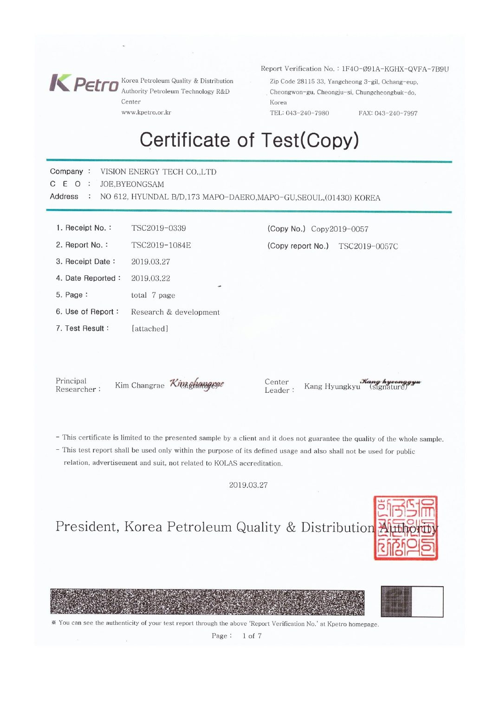
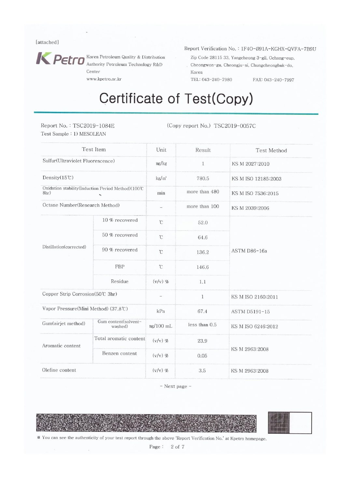
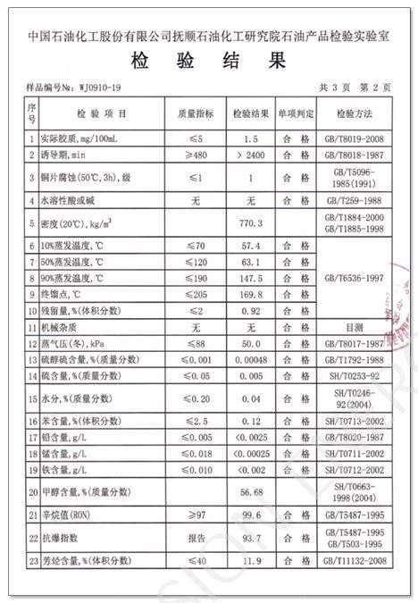
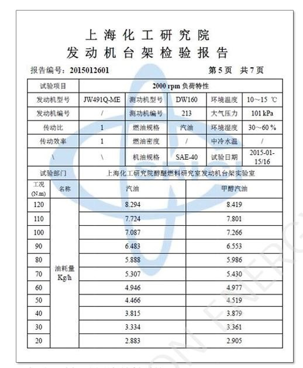
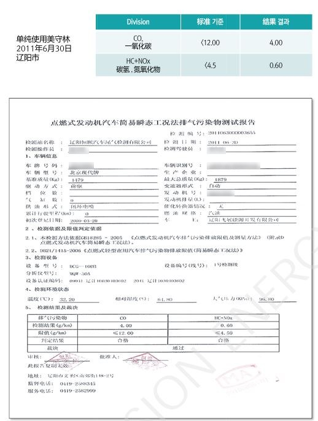

技术与验证
相分离、腐蚀、动力下降。现有醇类混合燃料遇到的问题，我们通过设计解决，并通过测试确认。
海外醇类混合汽油已知的问题
以下是美国、中国、印度、巴西等国使用E10、E15、E20等低比例混合燃料时报告的常见现象。这不是某一产品的缺陷，而是设计醇类混合燃料时必须管理的课题。
| 现象 | 主要原因 | 实际使用中可能出现的影响 |
|---|---|---|
| 相分离 | 混入水分，醇类与汽油的相容性有限 | 燃料分层，进入发动机的燃料成分不均匀 |
| 金属腐蚀 | 吸水的醇类、水分和氧化副产物 | 油箱、管路、油泵、喷油器可能被腐蚀 |
| 低温启动性下降 | 汽化热高，蒸气压与季节不匹配 | 冬季启动困难 |
| 油耗增加 | 体积热值低于汽油 | 行驶同样距离需要更多燃料 |
| 橡胶与密封件老化 | 醇类的溶剂性和材料溶胀 | 软管和密封件性能变化，可能渗漏 |
| 流通与运输受限 | 吸水性强，现有管道材质不适合 | 需要单独运输和储存 |
美国能源部（DOE）说明：E10可用于所有汽油车，E15可用于2001年及以后车型的轻型车。来源：U.S. DOE, Ethanol Blends
我们的技术与现有技术的差异
不是加入少量醇类，而是重新调配燃料。
混合方式
低比例简单混合（后添加）只是在汽油中加入少量（10~15%）醇类。
重新调配燃料醇类比例高达50%，并通过自有添加剂技术保持稳定。
相分离
出现分层低温或长期存放时会分层。15天不分层即为合格。
防止燃料分层−24℃存放测试365天以上未出现相分离（MESOLEAN）。
腐蚀
零件有腐蚀风险可能腐蚀金属和橡胶零件。
防止腐蚀添加剂可保护金属和橡胶零件。
动力与油耗
动力下降混入15%醇类时，油耗增加5~10%。
保持性能与汽油按5:5混合时，动力和油耗与汽油相当（MESOLEAN）。
一般低比例混合燃料的数字为行业常见水平。我们的数字为 MESOLEAN 的测试结果。
利守林（ESOLEAN）的三层设计
以50%高比例醇类为前提，三个层次相互补充。
- 基础调配使醇类与烃类成分均匀混合，即使醇类比例高，燃料也保持均匀状态。
- 沸点与蒸气压调整平衡轻质与重质成分，按季节调整蒸气压，兼顾低温启动性和高温气阻。
- 功能性添加剂体系通过提高临界含水量、防腐、抗氧化、改善燃烧和稳定金属离子等功能，降低剩余风险。
这一点区别于在成品汽油中后添加醇类的方式。
外部机构测试结果
以下结果为美守林（MESOLEAN，甲醇系）的外部机构数据。
- 外部机构由大学或官方机构测试、出具
- 自有测试经本公司自有测试确认
- 待发布官方机构结果将陆续补充
尾气减排率
韩国釜山大学机械技术研究所，对比汽油，启动后120秒累计
M30M50
尾气浓度对比
上海化工研究院，汽油 → MESOLEAN
| 项目 | 汽油 | MESOLEAN |
|---|---|---|
| HC | 220.23 ppm | 99.33 ppm |
| CO | 3.84 % | 0.07 % |
| NOx | 65.49 ppm | 21.71 ppm |
各项测试结果
| 测试项目 | 测试机构 | 结果摘要 | 资料 |
|---|---|---|---|
| 质量检测 | 韩国石油管理院石油技术研究所（2019.03） | 辛烷值99以上（已出具检测报告） | 外部机构 |
| 质量检测 | 中国石化抚顺石油化工研究院 | 通过23项国家标准 | 外部机构 |
| 加速与动力 | 上海化工研究院 / 韩国釜山大学 | 与汽油相当 | 外部机构 |
| 金属与橡胶腐蚀 | 韩国釜山大学机械技术研究所 | 与汽油相当 | 外部机构 |
| 启动性能 | 韩国釜山大学机械技术研究所 | 发动机转速、喷射时间和过量空气系数与汽油相同 | 外部机构 |
| 噪音与振动 | 韩国釜山大学机械技术研究所 | 怠速条件下与汽油相同 | 外部机构 |
| 实车尾气 | 辽阳市检测站（GB18285） | CO 4.00（标准12.00以下），HC+NOx 0.60（标准4.5以下），合格 | 外部机构 |
| 利守林 | 本公司 | 相分离、腐蚀、辛烷值已通过自有测试确认。官方机构结果（相分离、腐蚀、辛烷值、排放、油耗）将于日后发布 | 自有测试 待发布 |
检测报告与检验文件
外部机构出具的原始文件。

韩国石油管理院检测报告（封面）报告编号 TSC2019-1084E · 2019.03 · 英文版第1/7页 
韩国石油管理院检测报告（MESOLEAN）辛烷值（RON）100以上 · 英文版第2/7页 
韩国石油管理院检测报告（MESOLEAN + 汽油）英文版第4/7页 
中国石化抚顺石油化工研究院检验结果样品编号 WJ0910-19 · 23项合格 
上海化工研究院发动机台架检验报告（动力）报告编号 2015012601 · 第6/7页 
上海化工研究院发动机台架检验报告（油耗）报告编号 2015012601 · 第5/7页 
辽阳市实车尾气检测报告2011.06.30 · GB18285-2005 · 车辆及个人信息已模糊处理
现场使用案例：中国辽阳市出租车
这是2008~2012年中国辽宁省辽阳市当地出租车使用甲醇系燃料的记录，说明该燃料不仅能用于实验室，也能用于实际道路行驶。


环保性
根据燃烧式对1摩尔燃料燃烧所产生的 CO₂ 摩尔数进行的简单对比。
| 燃料 | CO₂（摩尔） |
|---|---|
| 异辛烷 C₈H₁₈（汽油代表成分） | 8 |
| 乙醇 | 2 |
| 甲醇 | 1 |
不包含热值、混合比例和全生命周期（WTW）评估。
经济性
与国际汽油批发价（税前，美元/升）相比具有成本竞争力。具体数字随市场和汇率波动，需另行协商。
有助于保障能源安全
有助于降低对进口原油的依赖，使能源来源更多元。